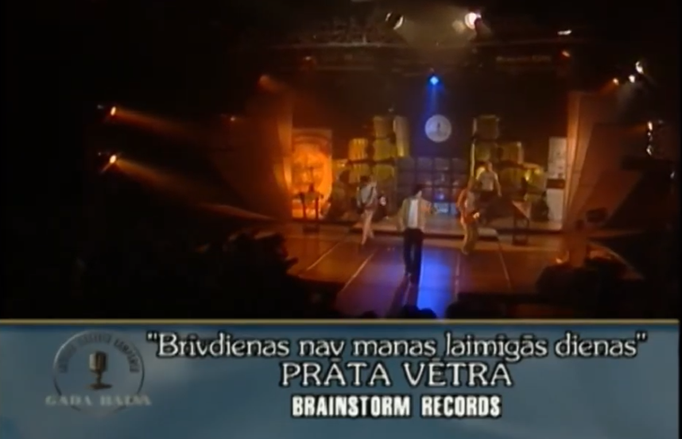

Brainstorm (Latvijoje Prāta Vētra - 'proto audra') - viena populiariausių XXI a. pradžios Latvijos roko/pop muzikos grupių. Grupė įkurta 1989 metais Jelgavoje. Grupę sudaro Renaras Kauperis (solistas), Janis Jubaltas (gitara), Maris Michelsonas (klavišiniai) ir Kasparas Roga (būgnai). Penktasis grupės narys Gundaras Mauševicas (bosinė gitara) 2004 m. gegužės 23 d. žuvo autoavarijoje. Brainstorm iš viso yra gavę 22 Latvijos muzikos įrašų metų apdovanojimus.
Brainstorm pirmieji dalyviai iš Latvijos, kurie atstovavo šaliai Eurovizijos dainų konkurse, bei su daina My Star užėme trečiąją vietą Eurovizijoje 2000, kuri vyko Švedijoje. 2006 m. grupė Europos MTV muzikos apdovanojimuose pripažinta geriausia Baltijos šalių grupe.
1992 m. rugsėjį Brainstorm išleidžia pirmąjį singlą Jo tu nāc ir konkurse „Mikrofona aptauja“ užima 9-ą vietą. Po to pasirodo albumas Vairāk nekā skaļi (1993). Populiariausia albumo daina tampa Ziema, kuriai sukuriamas ir videoklipas. 1994 m. yra ramiausias periodas grupės istorijoje. Tačiau šiais metais 500 egzempliorių tiražu išleidžiamas maxi singlas Vietu nav. 1995 m. daina Lidmašīnas tampa visų laikų perkamiausiu singlu Latvijoje ir radijo stoties Super FM metų daina. Šiais metais grupė pasirodo Vokietijoje ir Didžiojoje Britanijoje. Po susižavėjimo alternatyviuoju roku, Brainstorm atsigręžia į meinstrimą ir išleidžia albumą Veronika, kuris tampa populiariu tarp jaunimo. Populiariausios albumo dainos yra Dārznieks, Apelsīns, Lidmašīnas, kurias žinomomis padaro labai lankomi grupės koncertai. Metų pabaigoje Latvijos radijo stotys pradeda groti dainą Tavas mājas manā azotē, kuri tampa 1996 m. hitu. Kitas žingsnis link sėkmės yra pasirašyta bendradarbiavimo sutartis su Microphone Records ir išleistas albumas Viss ir tieši tā kā tu vēlies 1997 metais. Albumas gavo „Auksinio disko“ statusą pagal pardavimo apimtis, padarydamas Brainstorm populiariausia Latvijos grupe. Populiariausios albumo dainos: Viss ir tieši tā kā tu vēlies, Mans draugs, Neatgriešanās, Tavas mājas manā azotē. Taip pat neoficialiais hitais tampa praktiškai visos Brainstorm dainos, dėka ypatingų grupės koncertų ir solisto Renaro Kauperio sugebėjimo užvesti bet kokią publiką. Didelį grupės populiarumą liudija pasiūlymai grupės nariams vesti laidas televizijoje ir radijuje, taip pat kvietimas dalyvauti Dailes teatro miuzikle Šveiks, kuris tampa lankomiausiu muzikiniu spektakliu Latvijoje. Savo pirmąjį tarptautinį singlą grupė įrašo 1998 m. Vokietijoje, kartu su Fool's Garden prodiuseriu Volker Hinkel. Tai dainos Tavas mājas manā azotē angliškoji versija Under My Wing. Singlas grojamas Baltijos šalių radijo stotyse, taip pat pasiekia kelias kitas valstybes. Netrukus grupė iškovoja Grand Prix Karlshamn festivalyje, Švedijoje. 1999 m. Brainstorm išleidžia ketvirtąjį albumą Starp divām saulēm. Kartu išleidžiamas ir pirmasis tarptautinis grupės albumas Among The Suns, kuris yra albumo Starp divām saulēm angliškoji versija. Albumas įrašytas Danijoje ir Švedijoje ir yra vienas iš brangiausių Latvijos muzikantų įrašų. Visi penki albumo singlai - Puse no sirds, Starp divām saulēm, Lec, Prom uz siltajām salām ir Tu izvēlējies palikt, per trumpą laiką pasiekė Latvijos radijo stočių Topų viršūnes. 2000 m. gegužės 13 d., Švedijoje, Brainstorm dalyvauja 45-ajame Eurovizijos dainų konkurse. Daina My Star užima III vietą tarp daugiau nei 20 dalyvių. Grupės pasirodymas gauna aukštą įvertinimą iš profesionalių muzikos kritikų. Singlas My Star grojamas praktiškai visų Europos valstybių radijo stotyse, o albumas Among The Suns yra parduodamas daugelyje šalių. 2000 m. rugpjūtį, po daugiau nei 10-mečio karjeros, išleidžiamas Brainstorm dainų rinkinys, kuriame sudėtos pačios populiariausios, įdomiausios ir iki tol neišleistos dainos. Brainstorm reguliariai koncertuoja įvairiose Europos šalyse. 2001 m. pasirodo albumas Online (Latvijoje - Kaķēņs, kurš atteicās no jūrasskolas), kuriame yra ir viena iš geriausių grupė dainų - Maybe. Dainos videoklipas nufilmuotas Prahoje ir yra rodomas daugelyje televizijos laidų visoje Europoje. Antrasis singlas Waterfall taip pat gerai pasirodo, o dainos videoklipas nufilmuotas Suomijoje. Albumą prodiusuoja Tony Mansfield ir jis yra įrašomas Anglijoje. 2003 m. išleidžiamas albumas A Day Before Tomorrow (Latvijoje - Dienās, kad lidlauks pārāk tāls). Singlus Colder ir A Day Before Tomorrow prodiusuoja Vokietijoje žinomas prodiuseris Alex Silva. Kitas albumo dainas prodiusuoja Steve Lyon. Albumas įrašytas Vokietijoje ir Danijoje. „Colder“ videoklipą kuria žinomas vokiečių prodiuseris Manuel Verner ir jis yra filmuojamas Ukrainoje. 2003 m. grupė apšildo The Rolling Stones Prahoje ir gimtadienio proga padovanoja Mikui Džegeriui saksofoną. 2004 m. naktį iš gegužės 22 d. į 23 d. avarijoje greitkelyje Ryga - Jelgava žūsta vienas iš grupės įkūrėjų, bosistas Gundaras Mauševicas, arba tiesiog Mumiņš. Nepaisant šios tragiškos netekties, kiti grupės nariai tęsia darbą. 2004 m. Brainstorm ir gerai žinoma Rusijos grupė Bi-2 įrašo dainą Cкoльзкиe yлицы (Skoljzkie ulicy) kuri įtraukiama į naują Bi-2 albumą Иномарки (Inomarki), išleistą kovo 2 d. Daina užima I vietą radijo stočių topuose Latvijoje, Ukrainoje ir Rusijoje. 2005 m. Brainstorm išleidžia albumą Četri krasti. Populiariausios albumo dainos - Četri krasti, Rudens ir Pilots Tims. 2005 m. rugpjūčio 21 d., turo metu, koncerte Rygoje, Mežaparke, pasiklausyti Brainstorm susirenka rekordinė publika - 40000 fanų. Visų šio turo koncertų bilietai parduodami per rekordinį laiką. 2006 m. pradžioje išleidžiama albumo Četri krasti angliškoji versija Four Shores. Singlas Thunder Without Rain tampa populiariu Rytų Europoje ir yra transliuojamas MTV Europe bei VH1 Europe. 2006 m. MTV Europos muzikos apdovanojimai 2007 vykę Kopenhagoj Brainstorm buvo sėkmingi, jie pripažinti geriausia Baltijos šalių grupe. 2008 m. gegužės 13 d. Latvijoje išleistas albumas Tur kaut kam ir jābūt.
|  | 1999. „Brīvdienas nav manas laimīgās dienas“ - radijo hitas Kasmetinis muzikos įrašų kompanijų apdovanojimas 1998 m. įvyko 1999 m. vasario 5 d. Latvijos televizijos 1-ojoje studijoje. |